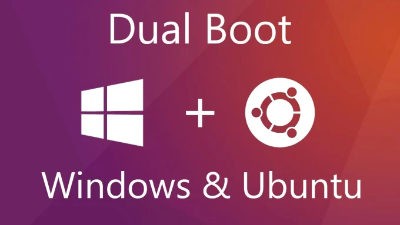

Compétence lié au projet
Administrer
Installer, configurer, mettre à disposition, maintenir en conditions opérationnelles des infrastructures,
des services et des réseaux et optimiser le système informatique d'une organisation.
- CE3.01 | en sécurisant le système d'information
- CE3.03 | en appliquant les normes en vigueur et les bonnes pratiques architecturales et de sécurité
- CE3.04 | en offrant une qualité de service optimale
- CE3.06 | en assurant la continuité d'activité
Description du Projet
Ce projet consiste à mettre en place un dual boot sur un ordinateur personnel, permettant de démarrer à la fois sous Windows et sous Linux, constitue une solution polyvalente pour les utilisateurs souhaitant bénéficier des avantages offerts par les deux systèmes d'exploitation. Ce rapport documente le processus de configuration d'un tel environnement sur notre ordinateur personnel, en abordant les différentes étapes, les méthodes utilisées et les avantages associés à cette configuration.
Méthodologie - Sauvegarde des données : Avant de commencer, nous avons effectué une sauvegarde complète de toutes nos données importantes, afin de prévenir toute perte éventuelle lors de la manipulation des partitions.
- Partitionnement du disque dur : Nous avons utilisé l'outil de gestion des disques de Windows pour réduire la taille de la partition système existante et créer un espace non alloué pour l'installation de Linux.
- Choix de la distribution Linux : Nous avons sélectionné une distribution Linux adaptée à nos besoins et préférences. Dans notre cas, nous avons opté pour Ubuntu en raison de sa convivialité et de sa large compatibilité matérielle.
- Création d'un support d'installation : Nous avons téléchargé l'image ISO d'Ubuntu depuis le site officiel et créé un support d'installation bootable, soit sur une clé USB soit sur un DVD.
- Installation de Linux : Nous avons redémarré l'ordinateur à partir du support d'installation d'Ubuntu et suivi les instructions du programme d'installation pour installer le système d'exploitation sur l'espace non alloué précédemment créé.
- Configuration du GRUB : Une fois l'installation de Linux terminée, le programme d'installation a automatiquement configuré le GRUB (Grand Unified Boot Loader) pour permettre le choix du système d'exploitation au démarrage de l'ordinateur.
La mise en place d'un dual boot sur notre ordinateur personnel, passant de Windows à Linux, s'est avérée être une opération relativement simple et bénéfique. Cette configuration nous offre la possibilité d'explorer et de profiter des avantages des deux systèmes d'exploitation, tout en préservant la flexibilité et la sécurité de notre environnement informatique. Ce rapport a documenté les différentes étapes du processus de mise en place du dual boot, ainsi que les avantages associés à cette configuration et répond également à différentes question.
Mon Expérience
Selon moi, cette compétence est la plus difficile à acquérir, car elle demande beaucoup de termes, de notions et de précision. J'ai encore beaucoup de choses à apprendre et beaucoup de points sur lesquels je doit m'améliorer.